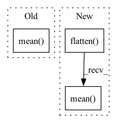

Pattern ID :33011

Before Change
return torch.stack(result).sum(dim=0).argsort(descending=False)[:self.neuron_num]
def get_neuron_value(self, x: torch.Tensor, neuron_idx: torch.Tensor) -> torch.Tensor:
return self.model.get_layer(x, layer_output=self.preprocess_layer)[:, neuron_idx].abs().mean()
// train the mark to activate the least-used neurons.
def preprocess_mark(self, mark: torch.Tensor, neuron_idx: torch.Tensor, **kwargs) -> torch.Tensor:
with torch.no_grad():
After Change
def get_neuron_value(self, x: torch.Tensor, neuron_idx: torch.Tensor) -> torch.Tensor:
fm = self.model.get_layer(x, layer_output=self.preprocess_layer)
loss: torch.Tensor = fm[:, neuron_idx].flatten(1).norm(p=2, dim=1)
return loss.mean()
// train the mark to activate the least-used neurons.
def preprocess_mark(self, mark: torch.Tensor, neuron_idx: torch.Tensor, **kwargs) -> torch.Tensor:
with torch.no_grad():
In pattern: SUPERPATTERN
Frequency: 4
Non-data size: 3
Instances
Fragment ID: 95485706
Project Name: ain-soph/trojanzoo
Commit Name: 8904786f836b19b6115f70773de6d59c83c127c4
Time: 2021-04-19
Author: ain-soph@live.com
File Name: trojanvision/attacks/backdoor/trojannn.py
M Class Name: TrojanNN
N Class Name: TrojanNN
M Method Name: get_neuron_value(3)
N Method Name: get_neuron_value(3)
M Parent Class: BadNet
N Parent Class: BadNet
M File Name: trojanvision/attacks/backdoor/trojannn.py
N File Name: trojanvision/attacks/backdoor/trojannn.py
M Start Line: 98
M End Line: 98
N Start Line: 98
N End Line: 100
'>
Before Change
loss = -0.5 * (
1 + log_variance - mean ** 2 - torch.exp(log_variance)
)
return loss.mean()
def forward(self, feature):
mean, log_variance = self.variational_parameters(feature)
// log_variance = torch.tanh(log_variance) * 5 // TODO: restore
After Change
@staticmethod
def kl(mean, log_variance):
loss = -0.5 * (1 + log_variance - mean ** 2 - torch.exp(log_variance))
return loss.flatten(start_dim=1).sum(dim=1).mean(dim=0)
def forward(self, feature):
mean, log_variance = self.variational_parameters(feature)
return (
'>
Fragment ID: 95485707
Project Name: aiwizo/template-nvae
Commit Name: aed71ab55e91462041d92d22afa5a3111ab63922
Time: 2020-08-15
Author: samedii@gmail.com
File Name: mnist_nvae/architecture/module/variational.py
M Class Name: Variational
N Class Name: Variational
M Method Name: kl(2)
N Method Name: kl(2)
M Parent Class: nn.Module
N Parent Class: nn.Module
M File Name: mnist_nvae/architecture/module/variational.py
N File Name: mnist_nvae/architecture/module/variational.py
M Start Line: 20
M End Line: 23
N Start Line: 21
N End Line: 22
'>
Before Change
centers += [cc]
centers = np.array(centers)
mean = centers.mean(axis=2)
std = centers.std(axis=2)
return mean, std
After Change
mean = []
std = []
for idx in range(num_meters):
meter = ser[:, :, idx].flatten()
kmeans = KMeans(n_clusters=2).fit(meter)
labels = kmeans.labels_
lab0 = meter[labels == 0]
lab1 = meter[labels == 1]
mean += [[lab0.mean(), lab1.mean()]]
std += [[lab0.std(), lab1.std()]]
'>
Fragment ID: 95485708
Project Name: uca-datalab/nilm-thresholding
Commit Name: 2b24d37855791e9ca50d60b2d7a9443f09a1cc70
Time: 2020-05-12
Author: danipg1409@gmail.com
File Name: better_nilm/model/preprocessing.py
M Class Name: AnonimousClass
N Class Name: AnonimousClass
M Method Name: _get_cluster_centroids(1)
N Method Name: _get_cluster_centroids(1)
M Parent Class:
N Parent Class:
M File Name: better_nilm/model/preprocessing.py
N File Name: better_nilm/model/preprocessing.py
M Start Line: 212
M End Line: 229
N Start Line: 212
N End Line: 228
'>
Before Change
loss = -0.5 * (
1 + delta_log_variance - delta_mean ** 2 / var - delta_var
)
return loss.mean()
def forward(self, previous, feature):
mean, log_variance = self.absolute_parameters(previous)
delta_mean, delta_log_variance = self.relative_parameters(
After Change
loss = -0.5 * (
1 + delta_log_variance - delta_mean ** 2 / var - delta_var
)
return loss.flatten(start_dim=1).sum(dim=1).mean(dim=0)
def forward(self, previous, feature):
mean, log_variance = self.absolute_parameters(previous)
delta_mean, delta_log_variance = self.relative_parameters(
'>
Fragment ID: 95485710
Project Name: aiwizo/template-nvae
Commit Name: aed71ab55e91462041d92d22afa5a3111ab63922
Time: 2020-08-15
Author: samedii@gmail.com
File Name: mnist_nvae/architecture/module/variational.py
M Class Name: RelativeVariational
N Class Name: RelativeVariational
M Method Name: kl(4)
N Method Name: kl(4)
M Parent Class: nn.Module
N Parent Class: nn.Module
M File Name: mnist_nvae/architecture/module/variational.py
N File Name: mnist_nvae/architecture/module/variational.py
M Start Line: 48
M End Line: 51
N Start Line: 45
N End Line: 48